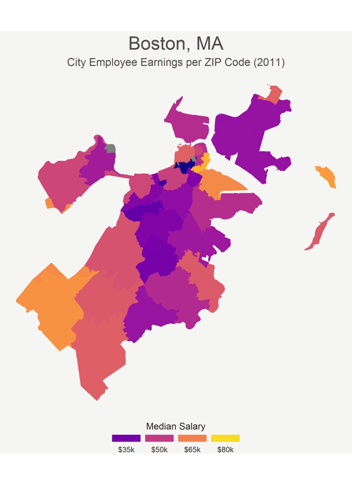

This is a personal project to show how median city employee earnings have evolved over the past decade in the neighborhoods of Boston. Earnings data and geographical data were taken from Analyze Boston, a recent effort by the city of Boston to encourage analysis of open data. This website is still a work in progress, so see the Contact section if you have any questions or comments.
Boston is often argued to be a racially segregated city. This issue of racial segregation is highly important, as segregation can lead to disparate levels of access to health care, capital, and good public education between racial and ethnic groups. My work focuses on a different, but related, subject: the issue of economic segregation. Using city employee earnings as a proxy for household income (see Methods for details), the graphics below show stunning disparities between the median incomes of Boston neighborhoods, even among adjacent neighborhoods. And these disparities appear to be getting worse over time—not better. Whether due to lower levels of city investment or lower quality of public education in these neighborhoods, it appears that the disparities between Boston neighborhoods must be addressed in some way.
Below are some graphics I created to visualize the growing income disparities between neighborhoods. For those unfamiliar with Boston's geography, concentrate on the middle of the city. Some of the darker neighborhoods in the chart are Fenway, Roxbury, Mission Hill, Dorchester, Mattapan. These five neighborhoods have reportedly low median household incomes compared to the rest of Boston, suggesting that city employee earnings serve as a good proxy for household income. See Methods for more details.
The chart below shows how median city employee earnings have changed from 2011 (top left) to 2019 (bottom right). Blue and purple neighborhoods have lower earnings than orange and yellow neighborhoods.
Below is a gif animation of the chart above.
Below is an animated cartogram, with neighborhoods shrinking and growing depending on whether their earnings in 2019 were lower or higher than average. Notice how it seems like Boston is being pinched in the middle.
Source code for the project can be found here.
One common question might be whether it is appropriate to use city employee earnings as a proxy for household income. The answer is somewhere between yes and no. While it seems that city employee earnings correlate strongly with household income reported by the census, the city employee earnings data exclude some obvious outliers on both sides of the spectrum. Homeless and unemployed folk are not included in this data set. Neither are wealthy financiers in the downtown area. Yet while city employee earnings data may not reflect the full range of incomes in Boston, the data set does a reasonable job of depicting general trends. And city data has one important advantage over census data: it is reported yearly. While census data gives us insight into trends at the macroscopic level, city data sets allow us to follow micro-trends.
Another question might be whether any controls were used. This project is admittedly observational, so I did not control for relevant variables like the average level of education in a neighborhood, or the race of a neighborhood, etc. The point of the project is not to make the claim that city employers are consciously discriminating against residents of a certain neighborhood. The goal of this project is to show that there are substantial disparities in income between neighborhoods of Boston, disparities that may point to the great underlying structural disease: inequality of opportunity.
In the future, I will want to make the graphics more readable to people unfamiliar with Boston's geography. I have some graphics with ZIP code labels, but they don't yet fit the aesthetic of the project. I have been working on labelling the larger Boston neighborhoods by their names.
I also realize that the color scheme is not color-blind-friendly. I am working to find a color scheme that looks nice and allows color-blind folk to appreciate the project.
In the longer term, I want to see how these trends change when the data set is restricted to a particular field. One example might be education: How have the median incomes of teachers, principals, and superintendents in these neighborhoods changed over the past decade? I think this sort of analysis could yield some interesting results.
Contact me at ggrajeda@princeton.edu if you have any questions, suggestions, or concerns.